1사용자와
사용자와
문제 정의
누구의 어떤 불편인지 좁힌다
초안·후보·코드를 빠르게 만들어 냅니다.
화면과 문서를 직접 열어 눈으로 확인합니다.
무엇을 넣고 무엇을 뺄지는 사람이 정합니다.

2주차 전체 흐름
지난주 요청하고 확인하고 고쳤다면, 이번 주는 문제를 정해 첫 MVP를 만듭니다.
누구의 어떤 불편인지 좁힌다
핵심 기능 하나와 완료 기준
prd.md와 세 파일로 첫 화면
design.md 기준으로 화면 적용
규칙 파일·Skill·서브에이전트
정한 것을 다시 훑고 끝까지

2주차 · 기획하고, 만들고,
확인하기
PART
누구의 어떤 불편인지 좁혀 한 줄 정의로 만든다
내 불편에서 출발해 «누가·어떤 상황·무엇을» 한 줄로 좁히고, 그 결정을 폴더에 남깁니다.
누구를 도울지 정하기
그 사람의 불편 하나 찾기
핵심 기능 하나로 첫 버전
사용자가 움직이는 순서
실제로 보일 화면 그리기
MVP — 핵심 기능 하나만 작동하는 첫 버전.
유저플로우 — 사용자가 어떤 순서로 움직이고 어떤 화면을 보는지 러프하게 그려 본 것.
고리는 그대로입니다. 앞에 결정이 붙고, 결정을 파일로 남기는 단계가 늘었습니다.
요청 → 확인 → 수정
기획·디자인 결정 → 요청 → 확인 → 수정
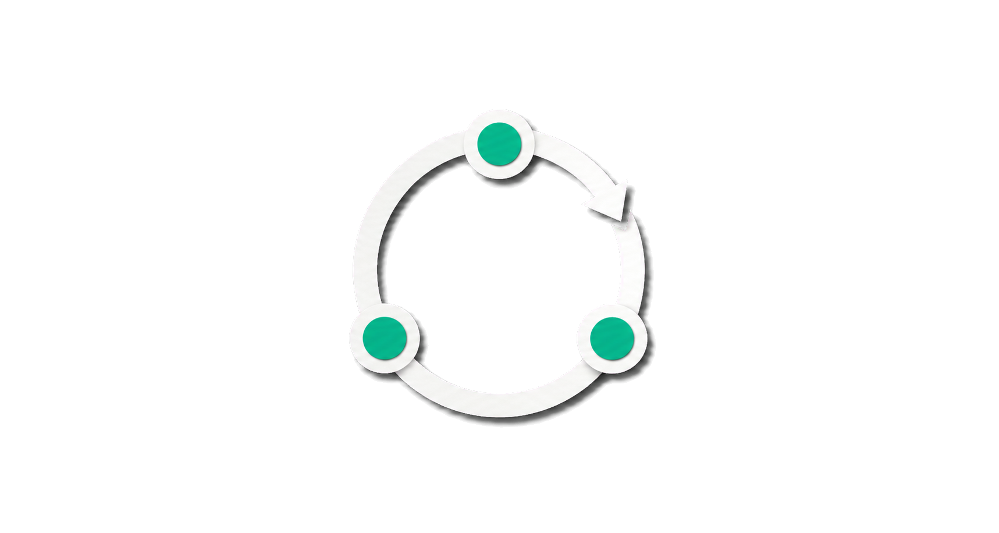
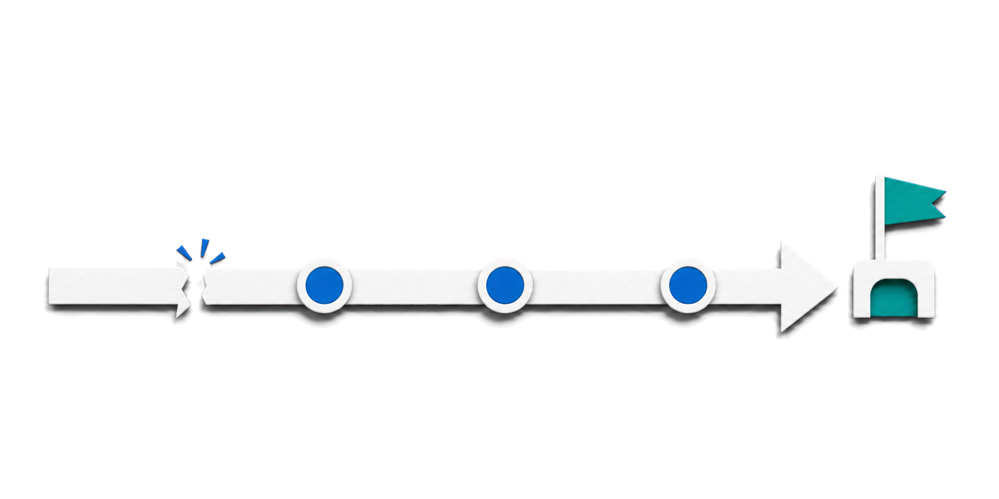
타깃 · 페인포인트
퇴근길 직장인이 오늘 뭘 했는지 기억나지 않는 불편을 겪습니다. 이 한 줄이 다음 실습에서 «한 줄 정의»의 재료가 됩니다.
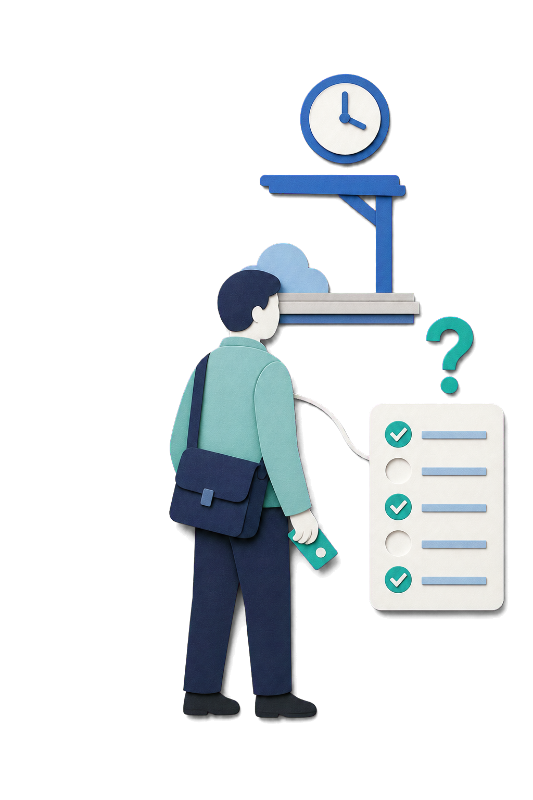
타깃을 좁힐수록 페인포인트도, 만들 것도 또렷해집니다. 넓은 타깃은 오히려 아무 기능도 정하지 못하게 만듭니다.
타깃 → 페르소나 → 가설 순으로 좁혀집니다. 좁힐수록 만들 기능과 화면이 또렷해집니다.
대표 인물 한 명 — 지하철 3호선으로 매일 왕복 80분을 통근하는 32세 UX 디자이너 민지, 퇴근길이면 오늘 뭘 했는지 잘 떠오르지 않습니다.
아직 확인 안 된 주장 — "민지는 퇴근길 지하철에서 한 줄 기록 도구를 매일 열어 쓸 것이다"
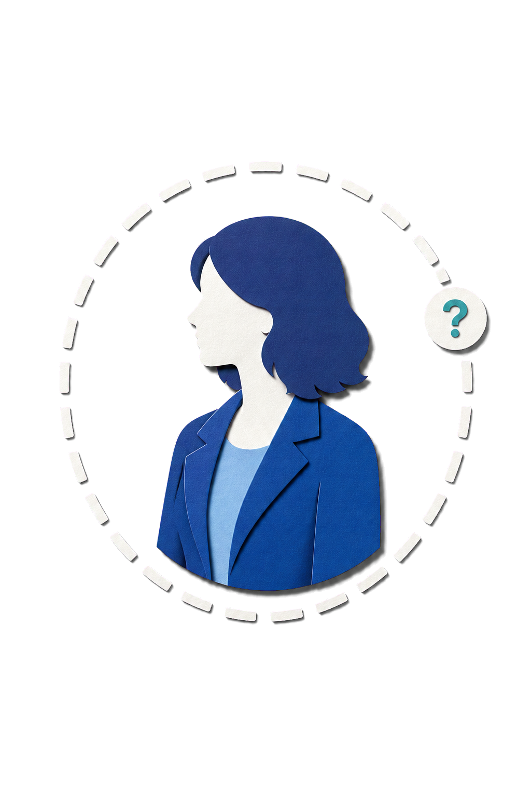
AI 공감의 경계
"이 사람이 이 상황에서 이걸 필요로 할 것이다." 만들기 전에는 사실이 아니라 확인할 가정입니다.
| AI가 내놓은 것 | 내가 가진 것 | |
|---|---|---|
| 무엇인가 | 전부 가설 | 직접 겪은 경험 |
| 근거 | 실제로 겪은 적이 없습니다. | 내 분야에서 몸으로 겪었습니다. |
AI는 내가 옳다는 쪽으로 맞장구치기 쉽습니다. 1주차에서 다룬 아첨 현상입니다. 맞장구에 휩쓸리지 말고 내 의견을 밀고 갑니다.
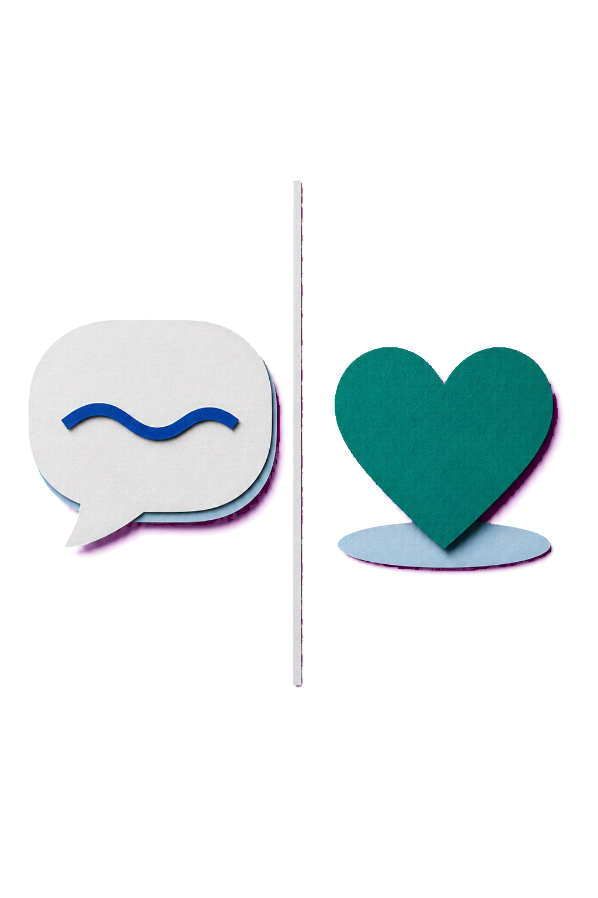
GPT에게 일을 시키기 전에, GPT에게 그 일을 시킬 문장을 먼저 써 달라고 합니다.
한 번뿐인 질문은 바로 시키고, 반복해서 쓸 지시는 프롬프트부터 받아 둡니다.
오늘의 주제여행 앱을 만들 겁니다
한 문장혼자 당일치기를 가는 사회초년생이 전날 밤 준비물을 목록으로 챙기게 돕는 도구
범위를 좁힘
"퇴근길 직장인이 오늘 한 일을 한 줄로 남기게 돕는 도구"
"자취생이 장보기 전 냉장고 속 재료를 확인하게 돕는 도구"
"평일 아침 요리 초보가 남은 재료로 뭘 만들지 정하게 돕는 도구"
누가·어떤 상황·무엇을이 다 보입니다
멋진 홍보 문구
"세상을 기록으로 바꾼다"
누가·어떤 상황인지 알 수 없습니다
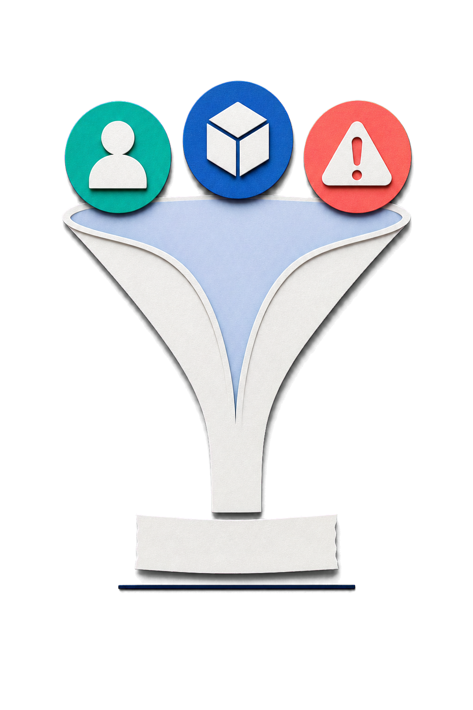
실습 ① 예시 프롬프트
역할: 초보자의 아이디어를 한 문장으로 좁혀 주는 상담자.
[내 상황] 자주 겪는 불편: [불편 한 줄]
· 그 일이 생기는 장면: [언제·어디서인지 내가 겪은 대로]
· 지금은 이렇게 해결함: [내가 실제로 하는 방법]
· 이번에 안 다룰 것: [빼 둘 것 하나]
위 내용만 써서 «[누가]가 [어떤 상황에서] [무엇을 하도록] 돕는 도구»
형식의 한 줄 정의 후보 문장을 3개, 서로 다른 방향으로 만들어 주세요.
넓은 대상(직장인·학생 같은 말)은 쓰지 말고, 제 상황에 없는 건 지어내지 마세요.
장면·현재 해결법까지 주면 남의 아이디어가 아니라 내 문장이 나옵니다.
«안 다룰 것»을 미리 적으면 AI가 기능을 붙여 오지 않습니다.
다른 사람에게 읽히고 «누구를 · 어떤 상황에서» 돕는지 짚어 내는지 확인합니다.
앞에서 정한 대상 · 불편 · 한 줄 정의가 화면의 어느 자리로 오는지 짚어 봅니다.
C오늘 기록
채팅 하나하나가 하나의 세션입니다. 새 세션을 열면 AI는 이전 세션에서 정한 것을 모릅니다. 결정이 그 세션의 컨텍스트(그 대화 안에서만 오간 맥락) 안에만 있었기 때문입니다.
새 대화를 열 때마다
이름과 방향을 처음부터 다시 설명합니다
다음 대화가 그 파일을 읽고 이어갑니다
설명을 반복하지 않아도 됩니다
코드부터 쓰게 하지 말고, 계획을 먼저 보여 달라고 합니다.
무엇을 만들지
어디에 만들지
무엇을 지켜야 하는지
다 되면 무엇을 확인할지
그래서 계획을 먼저 보여 달라 하고, 사람이 확인한 뒤에 시작합니다.
PART
핵심 기능 하나만 작동하는 첫 버전(MVP)과 대표 흐름·완료 기준을 정한다
핵심 기능 하나를 정하고, 실제로 작동하는 흐름과 완료 기준까지 만듭니다.
기능은 앱이 하는 일, 결과는 그걸로 해결된 불편입니다. 앱이 일해도 불편이 그대로면 결과는 없습니다.
기능은 5개 만들었는데 아무도 안 씁니다. 해결된 불편이 없습니다.
화면은 그럴듯한데, 불편이 사라졌는지 확인할 방법이 없습니다.

기능을 다 넣으면 무엇이 진짜 통했는지 알 수 없습니다.
그래서 핵심 하나만 제대로 작동시켜 반응하는지 확인합니다.
실험용 모형이 아니라, 작아도 실제로 쓸 수 있는 버전입니다.
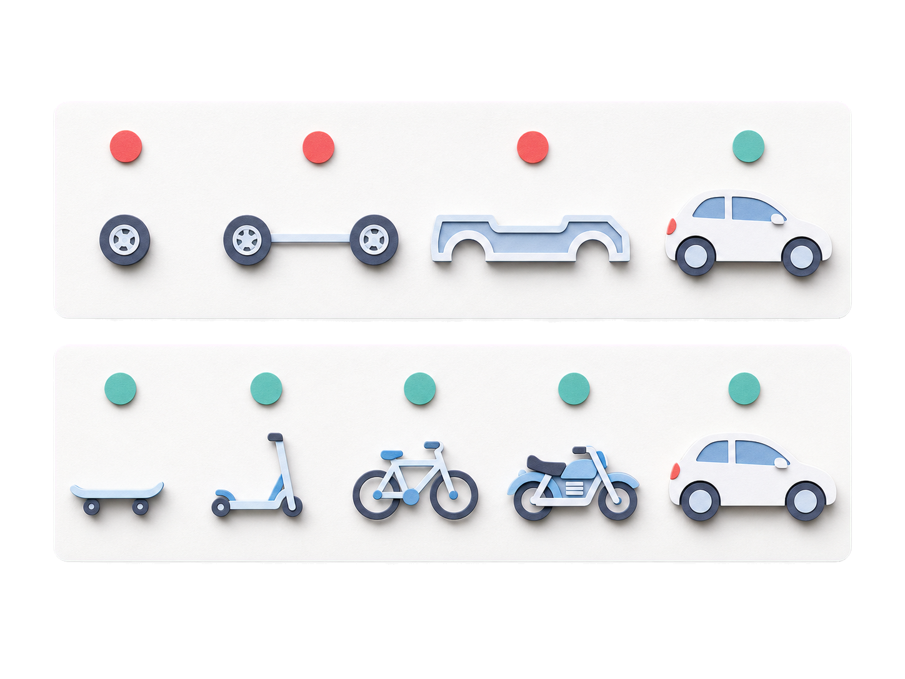
자동차를 만들려고 부품부터 내놓으면 사용자는 아무것도 못 합니다. 바퀴 2개, 프레임, 차체는 부분 완성일 뿐 가치가 아닙니다.
같은 목적(이동)을 위해 처음부터 쓸 수 있는 형태로 만듭니다.
스케이트보드 → 킥보드 → 자전거 → 오토바이 → 자동차
매 단계마다 사용자는 이동을 실제로 경험합니다.
MVP는 가장 작은 기능이 아니라, 핵심 가치가 통하는지 가장 빨리 확인할 수 있는 최소한의 형태입니다.
사용자가 끝나고 무엇을 보게 할지부터 정합니다. 아래 초록 줄이 이번 버전의 «결과»입니다.
오늘 기록
없으면 가치가 사라지는 것(1개)
예: 한 줄 입력 → 기록하기. 이것부터 확실히 작동해야 결과가 생깁니다.
없어도 가치가 유지되는 것
예: 꾸미기(테마·색상) · 검색 · 정렬 · 태그 · 알림 · 공유 · 통계 그래프 · 다크모드 · 내보내기. 있으면 편리하지만 없어도 결과는 그대로 유지되므로 지금 버전엔 넣지 않습니다.
핵심 기능 하나. 이것 하나가 작동해야 진짜 써 보고 배울 수 있습니다.
꾸미기 · 검색 · 정렬 · 태그 · 알림. 앞에서 본 부가 기능들입니다. 지금 넣으면 완성이 늦어지고 핵심이 묻힙니다.
다음에 더할 것. 버리지 않고 적어만 둡니다. 이번 주에 손대지 않을 뿐입니다.

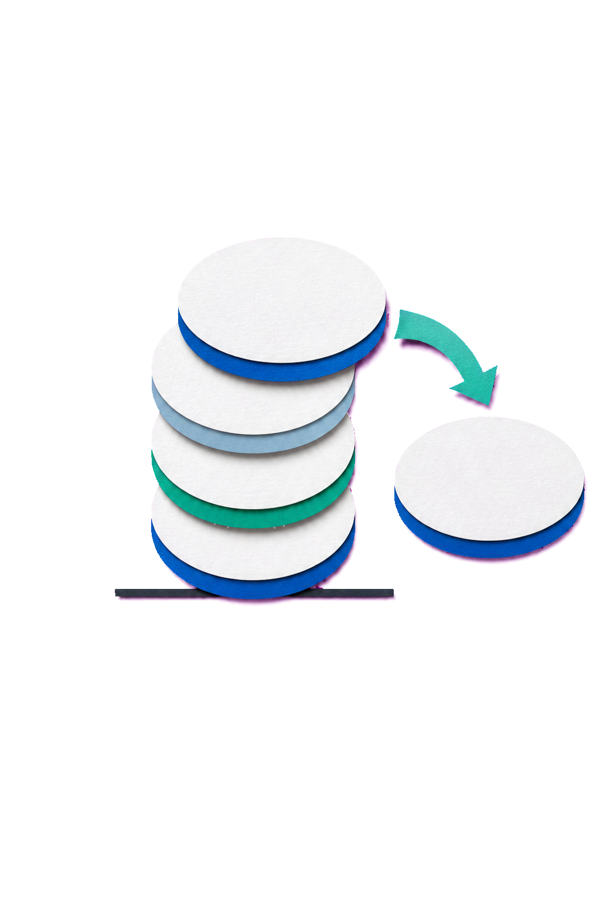
실습 ③ 예시 프롬프트
역할: 기능 범위를 같이 좁혀 주는 기획 파트너.
[내 상황] 한 줄 정의: [실습 ②에서 확정한 문장]
· 지금 쓰는 방법: [내가 아는 대로] 예: 수첩에 손으로 적는다
· 이번 주에 쓸 수 있는 시간: [시간] 예: 하루 2시간
· 절대 안 넣을 것: [내가 미리 뺀 것] 예: 로그인·결제
넣을 수 있는 기능을 10개 나열해 주세요. 각 기능은
«어떤 버튼·입력칸이 생기고 화면에 무엇이 보이는지»까지 한 줄로.
그다음 «없으면 한 줄 정의가 깨지는가»로 핵심 1개와 그 이유를 알려 주세요.
고르지 않은 기능은 «추후 계획»으로 적어만 두고 지금 만들지 마세요.
쓸 수 있는 시간을 알려 주면 이번 주에 못 할 크기를 걸러 줍니다.
«안 넣을 것»을 먼저 못박아야 뺀 기능이 다시 올라오지 않습니다.
고른 기능 1개와 «추후 계획»으로 옮긴 기능이 목록에 남았는지 확인합니다.
User Flow(사용자 흐름)는 사용자가 목표 하나를 끝낼 때까지 거치는 화면과 행동의 순서입니다.
무엇을 입력·선택하고 → 어떤 버튼을 누르고 → 무엇을 보는지의 순서로 적습니다.
예: 할 일 기록 앱 — 화면이 이렇게 바뀝니다
화면의 모든 기능이 아니라 대표 순서 하나를 먼저 그립니다. 예외 흐름은 필요할 때만 뒤에서 더합니다.
오늘 기록
입력이 있어야 실행하고, 실행해야 결과가 생기고, 결과가 눈에 보여야 변화입니다. 세 화면을 전부 눈으로 확인할 수 있어야 완성입니다.
입력만 받고 끝 — 아무 일도 일어나지 않습니다.
실행은 되는데 사용자는 성공했는지 알 수 없습니다.
단계를 몇 개로 나누든, 골격은 항상 입력 · 실행 · 결과 셋입니다.
| 단계 수 | 어떤 기능일 때 | 예 |
|---|---|---|
| 3단계 | 입력 한 번, 버튼 한 번으로 끝나는 기능 | 한 줄 적기 → 기록하기 → 목록에 보임 |
| 4~5단계 | 고르거나 확인하는 중간 화면이 끼는 기능 | 날짜 고르기 → 한 줄 적기 → 미리보기 → 기록하기 → 목록에 보임 |
화면이 바뀔 때마다 한 줄씩 씁니다. 생각하는 과정은 단계가 아닙니다.
화면을 만들다 보면 자주 부딪히는 상황입니다. 이걸 다루는 것을 예외 처리(exception handling)라고 부릅니다.
| 상황 | 이러면 곤란합니다 | 이렇게 합니다 |
|---|---|---|
| 빈칸으로 눌렀을 때 | 아무 일도 안 일어나서, 고장인지 내가 뭘 안 한 건지 모릅니다. | "활동을 한 줄 적어 주세요"라고 칸 아래에 안내를 띄웁니다. |
| 엉뚱한 값이 들어왔을 때 | 예상과 다른 값이 들어와 화면이 깨집니다. | 무엇이 잘못됐는지 한 줄로 알려 줍니다. |
| 한 번 실패한 뒤 | 처음 화면으로 돌아가 버려서 적은 내용을 다시 씁니다. | 적은 내용을 남겨 두고 다시 누를 수 있게 합니다. |
| 버튼을 두 번 눌렀을 때 | 같은 기록이 두 줄 생깁니다. | 처리하는 동안 버튼을 잠깐 잠가 둡니다. |
완료 기준은 «무엇이 보이면 끝인가»를 미리 적은 문장이고, 테스트는 그 문장이 실제 화면에서 나오는지 확인하는 행동입니다.
| 완료 기준 | 테스트 | |
|---|---|---|
| 무엇인가 | 확인할 수 있는 장면을 적은 한 문장 | 그 장면이 나오는지 직접 해 보는 일 |
| 언제 | 만들기 전에 미리 | 화면을 만든 뒤에 |
| 예 | "버튼을 누르면 목록에 그 줄이 보인다" | 정상 입력 · 빈칸 · 엉뚟한 값으로 각각 눌러 본다 |
| 안 되면 | 기준을 고치는 게 아니라 그대로 둡니다 | 미완료로 보고 원인을 다시 찾습니다 |

실습 ④ 예시 프롬프트
역할: 사용자가 겪는 순서를 정리해 주는 파트너.
[내 상황] 핵심 기능: [실습 ③에서 고른 기능]
· 사용자가 처음 보는 화면: [내가 생각한 첫 화면]
· 사용자가 넣을 값: [무엇을 입력하는지]
· 제가 «됐다»고 느끼는 순간: [내 말로]
이 기능을 끝낼 때까지의 순서를 3~5단계로 적어 주세요.
각 단계는 «무엇을 누르고 화면에 무엇이 보이는지»로 씁니다.
제가 안 적은 단계는 넣지 말고, 빠진 것 같으면 질문으로 남겨 주세요.
«됐다고 느끼는 순간»을 내 말로 주면 완료 기준이 남의 문장이 안 됩니다.
«안 적은 단계는 넣지 마»가 없으면 로그인·저장이 슬쩍 늘어납니다.
화면을 안 보고 흐름과 완료 기준을 말할 수 있는지 확인합니다.
PART
prd.md와 세 파일로 버튼이 반응하는 첫 화면을 만든다
3교시에서 처음 만나는 것은 마크다운 · prd.md · 역할별 파일 나누기입니다.
텍스트에 약속된 기호로 문서 구조를 표시하는 가벼운 문서 형식입니다.
일반 텍스트와 달리 특정 기호가 정해진 서식(제목·굵게·목록)으로 바뀝니다.
문서에 쓰인 기호 10개
| 기호 | 화면에서 되는 것 |
|---|---|
# | 제목(h1) |
## | 소제목(h2) |
**굵게** | 강조(bold) |
- | 목록(list) |
- [ ] | 할 일(미완료) |
- [x] | 할 일(완료) |
> | 인용(quote) |
--- | 구분선(hr) |
[글](주소) | 링크(link) |
``` | 코드 블록 |
오늘의 기획 메모
핵심 아이디어
퇴근길 직장인을 위한 하루 기록
AI 초안은 사람이 다시 확인
console.log("완료했습니다")
세 문서는 각각 다른 질문에 답합니다. 책임이 겹치면 나중에 어디를 고칠지 헷갈립니다.
무엇을 만드나
"이 앱은 무엇을 하나요?"
어떻게 보이나
"버튼은 무슨 색인가요?"
어떻게 일하나
"저장은 어디에 하나요?"
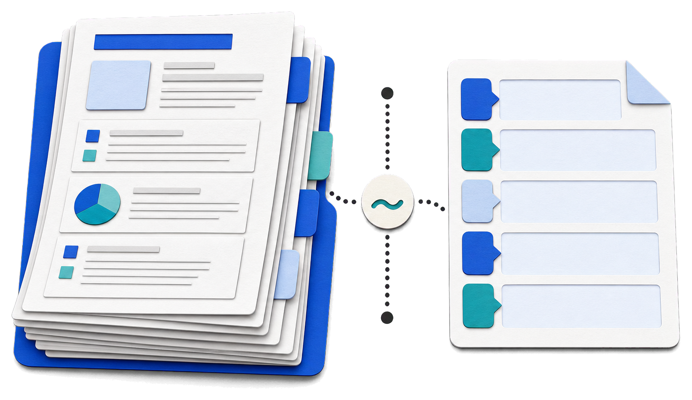
PRD (Product Requirements Document, 제품 요구사항 문서)는 무엇을 왜 만드는지를 적어 팀에 방향을 알리는 기획 문서입니다.
prd.md는 우리가 실제로 쓰는 다섯 항목(대상·핵심·흐름·제외·완료)만 담은 파일입니다. 길이가 아니라 항목이 기준입니다. 프로젝트가 커지면 같은 다섯 항목이어도 길어집니다.
에이전트가 prd.md를 읽고 무엇을 만들지 파악합니다.대상·핵심·흐름을 먼저 확인합니다.
만든 결과를 prd.md 기준과 맞춰 봅니다.제외·완료 항목까지 지켰는지 확인합니다.
즉 prd.md는 에이전트가 시작하기 전과 끝난 뒤 두 번 참고하는 기준 문서입니다.
다섯 항목 가운데 하나라도 비워 두면, 그 자리를 AI가 추측으로 메웁니다.
빈칸은 AI의 추측이 됩니다. 결과가 흔들립니다.

두 도구는 묻는 질문이 다릅니다. ChatGPT에는 "무엇을·왜"를 묻고, Codex에는 "어떻게 저장할지"를 맡깁니다.
| ChatGPT | 기획 · 질문 · 비판무엇을·왜. 대화하며 아이디어를 정리하고 다듬는 상대입니다. |
|---|---|
| Codex | 구현 · 저장어떻게. 정리된 결정을 코드와 문서 파일로 만들어 폴더에 저장합니다. |
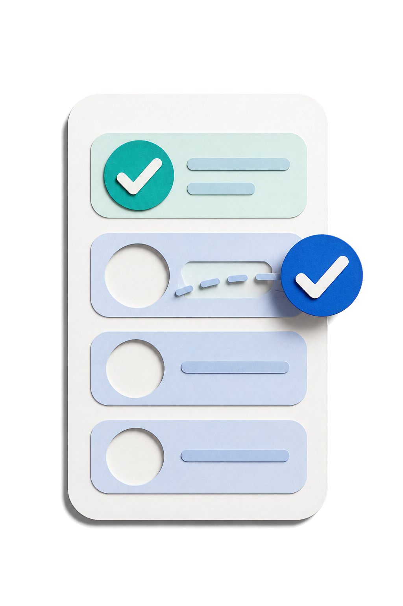
실습 ⑤ 예시 프롬프트
역할: 초보자용 웹앱 기획을 prd.md로 정리하는 도우미.
[내 프로젝트] 한 줄 정의: [실습 ②에서 확정한 문장]
· 핵심 기능: [실습 ③] / 제외: [실습 ③에서 뺀 것]
· 흐름: [실습 ④의 3~5단계] / 완료 기준: [실습 ④의 한 줄]
· 사용자에 대해 제가 아는 사실: [관찰했거나 직접 겪은 것]
이 맥락만 써서 prd.md 초안을 작성해 주세요.
대상 · 핵심 · 흐름 · 제외 · 완료 기준 5개 Markdown 제목, 각 항목 한 문장.
제가 안 적은 기능은 만들지 말고, 모르는 것은 [확인 필요]로 남기세요.
재료(정의·기능·흐름)를 먼저 주면 AI가 추측으로 채우지 않습니다.
«모르면 [확인 필요]»는 그럴듯한 지어내기를 눈에 보이게 만듭니다.
다섯 항목이 다 채워졌는지, 각 줄이 화면에서 확인 가능한 표현인지 확인합니다.
코드가 커지면 역할별로 나눠야 고칠 때 그 파일만 엽니다.
프로젝트가 커지면 나누는 기준도 늘어납니다. 그때그때 에이전트가 판단합니다.
prd.md를 기준으로 Codex가 역할별로 파일을 나눠 만듭니다. React 같은 프레임워크는 쓰지 않습니다.
같은 문서라도 넘기는 방식에 따라 다음 대화에서 살아남는지가 갈립니다.
이 폴더의 prd.md를 먼저 읽고 시작해 주세요.
거기 적힌 «핵심 기능»과 «흐름»대로 화면을 만들어 주세요.
제가 꼭 넣고 싶은 것: [화면에 꼭 보였으면 하는 것 하나]
순수 HTML·CSS·JS만 쓰고, 설치·빌드·프레임워크는 쓰지 마세요.
파일 구성은 스스로 정하되, 왜 그렇게 나눴는지 한 줄로 알려 주세요.
다 만들면 «완료 기준»과 맞는지 스스로 대조해서 알려 주세요.
PART
정보 구조·문구·가독성 기준을 design.md에 담아 화면에 적용한다
3교시에 만든 첫 화면의 정보 구조와 문구를 정하고, 그 기준을 design.md에 담아 화면에 적용합니다.
화면 표현의 출발점
사용 전부터 사용 후까지 사용자가 겪는 모든 경험
 UI · 보이는 일각UX · 경험 전체
UI · 보이는 일각UX · 경험 전체
사용자가 보고 · 누르고 · 듣는 서비스와 만나는 접점


화면에 보이는 메뉴는 빙산의 일각입니다. 그 아래에 «무엇을 어디에 둘지» 정한 결정이 눈에 보이지 않게 깔려 있습니다.
정보 구조는 무엇을 어디에 둘지 미리 정해 두는 일입니다. 화면이 한 장이어도 순서는 정해야 합니다.
무엇을 먼저 보여줄지 정하는 것이 정보 우선순위입니다. 같은 내용, 같은 기능인데 순서와 크기만 바꿨습니다.
무엇부터 봐야 할지 알 수 없습니다. 제목·입력·버튼·결과가 같은 크기로 뒤섞여 눈이 갈 곳을 못 찾습니다.
한 눈에 순서가 보입니다. 굵은 선이 눈이 지나가는 길입니다. 제목으로 무엇인지 알고, 입력칸에서 무엇을 넣을지 알고, 버튼을 누른 뒤 아래에서 결과를 봅니다.
버튼·안내·오류 문구도 화면 설계의 일부입니다. 같은 상황, 다른 표현을 나란히 봅니다.
색만으로 표시하면 색을 구분하기 어려운 사람에게는 뜻이 사라집니다. 아래 두 예시로 확인합니다.
두 줄이 똑같아 보여 무엇이 저장됐는지 알 수 없습니다.
색이 안 보여도 글자가 뜻을 그대로 전합니다.
색은 쓰되, 색만으로는 말하지 않습니다
색이 예뻐도 배경과 밝기가 비슷하면 글자가 묻힙니다. 아래 세 칸을 눈으로 비교해 봅니다.
오늘 한 일을 한 줄로 남겨 보세요
연한 회색 글자를 흰 배경에 얹으면 밝기가 비슷해 글자가 배경에 잠깁니다.
오늘 한 일을 한 줄로 남겨 보세요
같은 흰 배경이라도 글자를 충분히 어둡게 하면 또렷하게 떠오릅니다.
오늘 한 일을 한 줄로 남겨 보세요
배경을 어둡게 했다면 글자를 밝게 뒤집습니다. 중요한 건 «둘의 차이»입니다.
눈을 가늘게 뜨고 봅니다. 글자가 배경에 잠겨 보이면 대비가 부족한 것입니다 숫자로 된 기준을 외울 필요는 없습니다. 안 읽히면 더 어둡게, 배경이 어두우면 더 밝게 바꿉니다.
컬러는 사용자의 감정을 자동으로 이끌어냅니다. 의도하지 않아도, 보는 순간 무드가 정해지기 때문입니다.
신뢰 · 절제 · 프리미엄
삼성 · 포르쉐 · 로레알
권위 · 미니멀 · 절대감
셀린느 · 불가리
감성 · 따뜻함 · 휴식
감성 펜션 브랜드 · 카페24
순수 · 여백 · 여유
Aesop · 무인양품
내 서비스가 주고 싶은 느낌을 먼저 고르고, 그 느낌의 색을 씁니다.
창의성 · 열정 · 낙관 · 모험 · 자신감 · 따뜻함 · 유희 · 동기부여
신뢰 · 안정 · 성실 · 평화 · 보안 · 인내 · 차분함 · 진지함
달콤함 · 다정함 · 친절 · 장난스러움 · 따뜻함 · 연민 · 로맨스
행복 · 명확성 · 호기심 · 명랑 · 에너지 · 긍정 · 낙관 · 친근함
성장 · 균형 · 신선함 · 자연 · 땅 · 건강 · 조화
럭셔리 · 창의성 · 야망 · 자신감 · 신비 · 상상력 · 조화
흥분 · 사랑 · 에너지 · 긴급함 · 야망 · 위험 · 힘
우아함 · 힘 · 권력 · 럭셔리 · 고급스러움 · 시간을 초월함 · 신비
같은 페이지가 노트북에서는 넓게, 휴대폰에서는 좁고 길게 다시 배치되는 것을 «반응형»이라고 합니다.
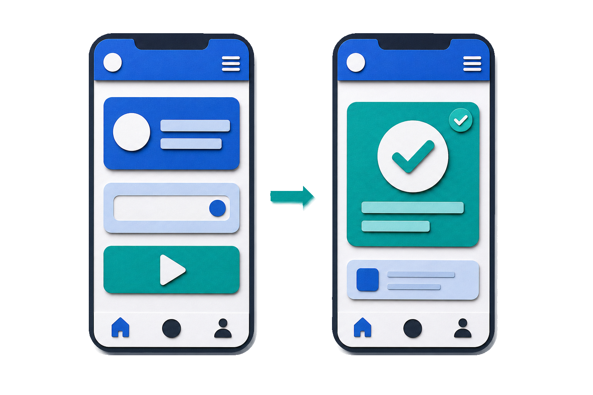
왜 깨지나가로로 나란히 두던 것이 폭이 줄면 서로를 밀어냅니다. 글자가 잘리거나 버튼이 화면 밖으로 나갑니다.
무엇이 유지돼야 하나설명 → 입력 → 실행 → 결과. 이 순서가 좁은 화면에서도 그대로여야 합니다.
어떻게 확인하나브라우저 창을 휴대폰 폭까지 좁혀 봅니다. 가로로 밀어야 보이는 것이 생기면 무너진 것입니다.
같은 요청, 다른 결과입니다. 차이는 기준을 넘겼는가뿐입니다.
값을 그때그때 새로 고르면 화면이 들쭉날쭉해집니다. 값 → 이름 → 재사용 세 걸음으로 묶습니다.
레퍼런스란 우리 화면을 만들 때 참고하는 다른 서비스·화면입니다. 그대로 베끼는 자료가 아니라, 왜 그렇게 만들었는지 뜯어보는 관찰 대상입니다.
통째로 복제하지 않기
↓
색 · 여백 · 글자 · 정보 순서를 관찰하기
↓
무엇을 참고할지 · 무엇은 안 따라 할지도 정하기
검색해서 나온다고 무료가 아닙니다. 이미지·글꼴은 출처와 사용 조건을 먼저 확인합니다.
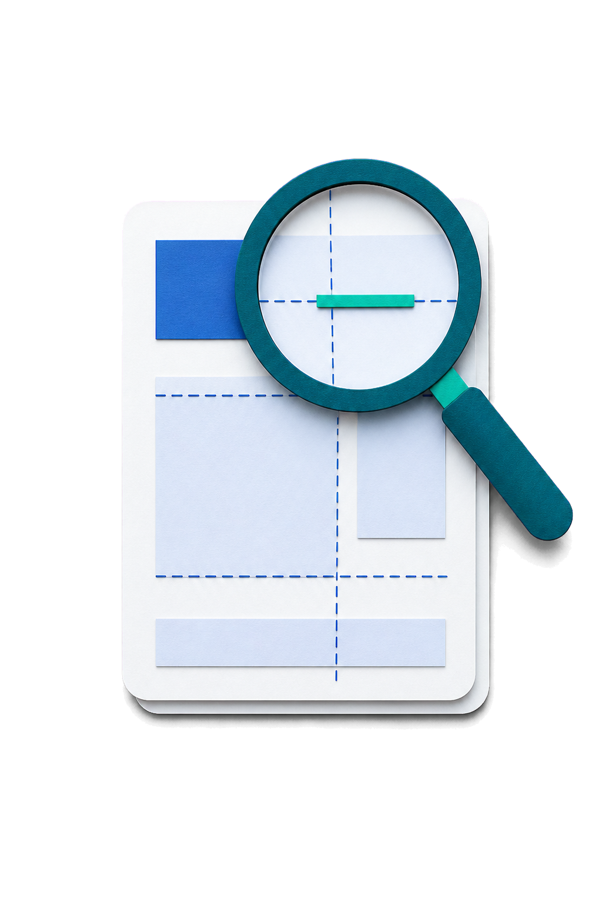
"예쁘다"는 느낌만 적으면 다음 실습(design.md)에 옮길 수 없습니다. 색·여백·순서·문구처럼 말로 옮길 수 있는 특성까지 적습니다.
참고할 화면: «[서비스 이름 / 화면 이름]»
이 화면에서 색 · 여백 · 순서 · 문구 네 가지를 각각 한 줄로 설명해 주세요.
그다음 제 도구(«[한 줄 정의]»)에 따라 할 것과 안 할 것으로 나눠 주세요.
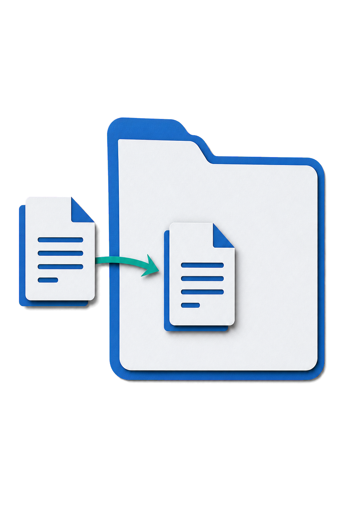
문서만 쓰고 끝내기
design.md에 적기만 하고 화면은 그대로 두면 반영되지 않습니다.
대신 화면을 직접 열어 2가지가 바뀌었는지 확인합니다.
실습 ⑧ 예시 프롬프트
이 폴더의 design.md를 먼저 읽어 주세요.
[내 판단] 이번에 바꾸고 싶은 곳: [화면의 어느 부분]
· 꼭 반영할 기준 2가지: [design.md에서 내가 고른 것]
· 절대 건드리지 말 것: [지금 마음에 드는 부분]
고른 2가지를 지금 화면에 적용해 주세요.
무엇을 · 어디에 적용했는지 파일 이름과 함께 알려 주세요.
휴대폰 폭으로 좁혀도 글자와 버튼이 화면 밖으로 나가지 않게 해 주세요.
design.md에 없는 기준은 만들지 마세요.
바꿀 곳이 애매하면 고치지 말고 저에게 먼저 물어봐 주세요.
문서를 기준으로 삼게 해야 화면과 문서가 갈라지지 않습니다.
«건드리지 말 것»을 정해 두면 마음에 들던 부분이 같이 바뀌지 않습니다.
화면을 열어 2가지가 실제로 바뀌었는지 확인합니다.
file:///로 시작합니다.
내 컴퓨터의 파일을 브라우저가 그대로 엽니다.http://localhost:…로 시작합니다.
파일을 넘겨주는 «서버»가 먼저 켜져 있어야 열립니다.파일을 만든 것과 작동하는 것은 다릅니다.
범위가 부풀고 Codex가 추측으로 채우는 부분이 늘어납니다.
어디서 틀렸는지 알기 어려워 고치는 데 더 오래 걸립니다.

실습 ⑨ 예시 프롬프트
이 폴더의 prd.md와 design.md를 먼저 읽고 시작해 주세요.
[내 선택] 추후 계획에서 꺼낸 기능: [내가 고른 기능 하나] 예: 저장한 기록 목록 보기
· 이 기능이 들어갈 자리: [화면의 어디] 예: 입력칸 아래
· 절대 건드리지 말 것: [지금 잘 되는 기능] 예: 저장 버튼
이 기능 하나만 화면에 추가해 주세요. 순수 HTML·CSS·JS만 씁니다.
모양은 design.md의 기준을 따르고, 없는 기준은 만들지 마세요.
끝나면 무엇을 · 어디에 추가했는지 파일 이름과 함께 알려 주세요.
원래 있던 기능이 그대로 되는지도 함께 확인해 주세요.
미뤄 둔 목록에서 꺼내야 «그때 왜 뺐는지»를 기억한 채로 넣게 됩니다.
«하나만»이 없으면 미뤄 둔 것을 한꺼번에 다 만들어 놓습니다.
화면을 열어 새 기능과 원래 기능이 둘 다 되는지 확인합니다.
되돌아갈 기준을 남깁니다. 고치다 잘못되면 그 상태로 돌아옵니다.
작업 폴더를 통째로 복사해 프로젝트명_backup_날짜로 이름 붙입니다.
PART
만들며 겪은 반복을 규칙 파일·Skill·서브에이전트로 줄인다
오늘 AI에게 여러 번 맡겨 봤습니다. 무엇을 주고, 무엇을 막고, 무엇을 확인할지 미리 정해 같은 작업을 더 예측 가능하게 만듭니다.
이런 작업에 맞습니다. 매번 같은 순서로 끝나는 일. “표를 읽고, 합계를 내고, 화면에 띄워”
이런 작업에 맞습니다. 상황에 따라 할 일이 달라지는 일. “이 폴더를 보고 뭘 고쳐야 할지 정해서 고쳐”
하네스는 모델과 도구·작업 환경 사이의 반복 실행을 운영하는 시스템입니다.
모델이 다음 행동과 도구 사용을 판단하면, 하네스가 호출을 실행하고 결과를 다시 전달하며 상태·컨텍스트·권한과 실행 흐름을 관리합니다.
모델 자체는 외부 파일을 직접 저장하거나 명령을 실행할 수 없으며, 실행 결과도 하네스를 통해 전달받아야 합니다.
모델 + 하네스 + 연결된 도구·작업 환경 → 실제 행동할 수 있는 에이전트 시스템
하네스 안에 도구·작업 환경이 포함되기도 하며, 시스템에 따라 구성 방식이 다를 수 있습니다.
세 부품이 각각 다른 일을 맡고, 화살표 방향으로 결과가 오갑니다.
다음 행동과 도구 사용을 판단하는 추론 엔진
모델과 도구를 연결하고 반복 실행을 운영하는 제어 시스템
실제 작업이 벌어지는 자리 — 파일·셸·브라우저
Mitchell Hashimoto가 에이전트의 반복 실수를 지침과 검증 도구로 막는 작업을 “harness engineering”이라고 불렀고, 비슷한 시기에 OpenAI·LangChain도 같은 표현을 썼습니다.
최초 창시자라고 단정하기보다, 업계 공통 용어로 자리 잡아 가는 중인 말입니다.
거창한 기술이 아니라 «어떤 도구로, 어떤 행동을 하게 할지»를 미리 정해 두는 것입니다.
이 네 문장이 이미 하네스입니다. 앞 장의 «실행·제어 시스템»이라는 정의는, 이런 제약을 사람이 아니라 장치가 매번 지키게 만든 것을 말합니다.
프롬프트가 컨텍스트 안에, 컨텍스트가 하네스 안에 들어 있습니다. 새 말이 나와도 앞말이 사라지는 게 아닙니다.
하네스가 왜 필요한가 · 모델이 스스로 못 하는 세 가지
“이제 프롬프트는 필요 없다”는 말은 정확하지 않습니다. 없어진 게 아니라 가장 안쪽 자리로 들어간 것입니다.
prd.md와 design.md를 썼고, 오늘 AGENTS.md까지 더해도 하네스의 한 칸, 즉 «맡기기 전에 주는 것»만 채운 것입니다. 나머지 네 칸은 아직 빕니다. 다음 장부터 이 칸들을 하나씩 채웁니다.
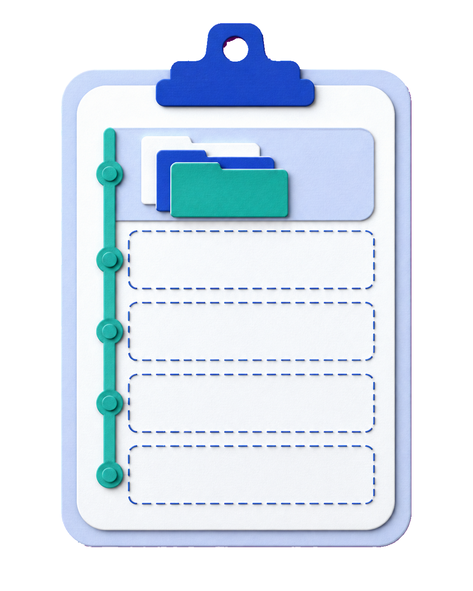
권한 · 실행 환경 · 기록은 별도 도구가 아니라 AGENTS.md 안에 적어 둘 수 있습니다. AGENTS.md가 «어떻게 일하나»를 담는 파일이라, 끝난 뒤 무엇을 확인할지·어디까지 손대도 되는지·무엇을 남길지가 다 여기 들어갑니다.
에이전트가 작업을 시작하기 전 자동으로 읽는 규칙 파일입니다.
AI의 기억이 아니라, 사람이 적어 둔 만큼만 지키는 고정된 규칙입니다. 하위 폴더에 규칙 파일을 또 두면 위쪽 규칙을 덮어쓰는 게 아니라 누적됩니다.
프로젝트마다 다르지만, 보통 이 세 종류를 적습니다.
한 문장이 한 줄입니다. 길게 설명하지 않고 지킬 것만 짧게 적습니다.
직접 다 쓰지 않아도 됩니다. 내 폴더를 읽게 한 뒤 «이 규칙 형식대로 AGENTS.md를 채워 줘»라고 에이전트에게 요청하는 것도 방법입니다. 나온 초안에서 내가 고칠 줄만 고칩니다.
앞서 본 “맡기기 전과 끝난 뒤까지”가 실제로는 이 여섯 가지입니다. 준비물은 AI가 일하는 동안 넣지 않습니다. 맡기기 전과 끝난 뒤, 작업을 앞뒤로 감쌉니다.
맡기기 전에 준다
끝난 뒤에 확인한다
사후 검증이 비면 결과를 판정할 기준이 없어 사람이 매번 눈으로 보는 수밖에 없습니다. 앞뒤가 다 있어야 하네스입니다. 이 여섯 가지 이름은 확정 표준이 아니라 사람마다 묶는 방식이 다릅니다.
앞의 네 칸을 채우는 것이 하네스입니다. 아래 네 가지는 AGENTS.md에 적어 두는 항목이자, 도구 설정으로 강제하는 항목입니다. 이 넷이 함께 작동해야 «AI에게 맡기는 시스템»이 됩니다.
안전 규칙이 항상 최우선이고, 되돌리기 어려운 행동은 승인 전에 멈춥니다.
실제 폴더 대신 격리된 공간에서 돌리면, 잘못돼도 그 공간만 버리면 됩니다.
한 일과 남은 일을 적어 두지 않으면 처음부터 다시 설명해야 합니다.
실패한 이유를 남겨 두면, 다음번엔 같은 자리에서 다시 걸리지 않습니다.
네 가지를 갖춰도 지키는 것은 다른 문제입니다. 다음 장에서 그 차이를 봅니다. 묶는 이름은 사람마다 다릅니다. 이름보다 «무엇을 정해 두었는가»가 중요합니다.
되돌릴 수 있으면 규칙, 없으면 장치
“프로젝트 폴더 밖은 건드리지 말아 줘”AI가 참고는 하지만 강제로 멈추지는 않습니다.
프로젝트 폴더(루트) 밖 수정은 실행 전에 멈추고 물어봅니다1주차에서 정한 «작업은 프로젝트 폴더 안에서» 기준이 여기서 강제됩니다.
둘 다 «하지 마»라고 말하지만, 넘어갈 수 있느냐가 다릅니다.
| 규칙 파일 · AGENTS.md | 권한 · 승인 설정 | |
|---|---|---|
| 하는 일 | 지키도록 유도합니다 | 넘어갈 수 없게 강제합니다 |
| 어디에 있나 | 프로젝트 폴더 안 파일 | 도구의 승인·권한 설정 |
| 어길 수 있나 | 지시가 부딪히면 지나칠 수 있습니다 | 실행 자체가 멈추고 물어봅니다 |
| 기준 | 내가 적은 만큼 | 프로젝트 폴더(루트)가 경계 |
되돌릴 수 있으면 규칙, 되돌릴 수 없으면 권한으로 막습니다. 1주차에서 정한 «작업은 프로젝트 폴더 안에서»가 여기서 장치로 강제됩니다. 폴더 밖은 규칙이 아니라 권한이 막습니다.
둘 중 하나를 고르는 게 아닙니다. 항목마다 두 질문에 답하면 자리가 정해지고, 자리가 방법을 정합니다.
두 질문 모두 “아니오”에 가까울수록 오른쪽 위입니다. 여기는 적어 두는 것으로 부족해서 장치로 막습니다.
Skill은 반복되는 절차 하나를 담아 둔 지침 묶음입니다. 요청이 그 절차와 맞을 때만 열립니다.
언제 쓰나
어떻게 만드나 · AI에게 시킵니다
제가 매번 반복하는 절차입니다: «[내 절차를 순서대로]»
이걸 Skill로 만들어 주세요.
어떤 요청일 때 이 Skill이 열려야 하는지도 한 줄로 적어 주세요.
둘 다 파일에 적어 두는 것이지만 역할이 다릅니다.
정해진 과정을 반복해서 시키고 있다면 Skill로 만듭니다. 같은 지시를 채팅에 세 번 넘게 붙여넣고 있다면 그 신호입니다. 매번 지킬 것을 Skill에만 넣으면 다른 작업에서 놓치고, 반복 절차를 규칙 파일에 넣으면 무관한 작업에서도 매번 읽힙니다.
사실이면 규칙 파일, 절차면 Skill
“새 화면 추가해 줘”라고 시킨 순간에만 열립니다
그래서 반복 절차를 규칙 파일에 넣으면 모든 작업에서 그 길이를 다시 읽습니다.
이 시스템은 한 번에 완성하는 설계가 아닙니다. 같은 문제가 두 번 나올 때마다 그 자리를 한 칸씩 메우는 일입니다.
한 번뿐인 실수까지 규칙으로 만들면 규칙이 길어져 아무도 읽지 않습니다. 두 번 이상 반복될 때만 넣습니다
오늘 본 것을 전부 갖출 필요는 없습니다. 막히는 자리가 생겼을 때 한 칸씩 올립니다.
만들 것 · 내 프로젝트의 AGENTS.md 6~10줄 고를 수 있는 규칙 — 정적 웹만 사용 · 서버 코드 금지 · 한 번에 하나만 수정 · 수정 후 재확인. 무엇을 고를지 모르겠으면 ChatGPT에 물어 추천받아도 됩니다.
“내 폴더를 읽고 뭐가 있고 뭐가 부족한지 알려 줘. 아직 고치지는 마.”
“이 폴더에 둘 AGENTS.md 초안을 6~10줄로 써 줘. 앞으로 지킬 규칙 다섯 개와, 다 됐는지 판단할 기준 세 개를 넣어 줘.”
“세 번째 규칙은 내 프로젝트에 안 맞아. 이렇게 바꿔 줘.”
“AGENTS.md로 저장해 줘.” — 파일을 직접 열어 보고, 다음 요청에서 그 규칙을 실제로 지키는지 확인하면 끝입니다.
실습 ⑩ 예시 프롬프트
이 폴더를 먼저 읽고 무엇이 있고 없는지 알려 주세요. 아직 고치지 마세요.
[내 프로젝트] 만드는 것: [한 줄 정의]
· 범위: [내가 정한 범위 — 예: 브라우저에서 바로 여는 한 화면]
· 제가 자주 겪은 실수: [1주차·오늘 겪은 것 하나]
· 꼭 지켰으면 하는 것: [내가 정한 규칙 하나]
그다음 AGENTS.md 초안을 6~10줄로 써 주세요.
담을 것: 지킬 규칙 5개 / 쓸 자료 / 다 됐는지 판단할 기준 3개.
저장은 제가 확인한 뒤에 합니다. 먼저 초안만 보여 주세요.
내가 겪은 실수를 주면 남의 규칙이 아니라 내 프로젝트 규칙이 나옵니다.
«아직 고치지 마»가 없으면 읽는 김에 파일을 손대 놓습니다.
AGENTS.md가 폴더에 있는지, 내가 고친 줄이 최소 1개인지 확인합니다.
PART
배운 판단 기준을 다시 확인하고, 각자의 주제로 작은 첫 작동 화면을 만듭니다
완벽한 앱이 아니라, 누군가가 한 번 써 볼 수 있는 첫 작동을 만드는 시간입니다.
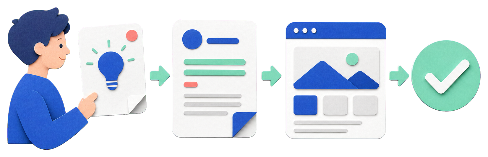
오늘의 산출물 문제 한 줄 · prd.md · 직접 열어 본 첫 화면
PART 1 · 사용자와 문제 정의
넓은 아이디어를 한 사람의 반복되는 순간까지 좁혀야 다음 결정을 할 수 있습니다.
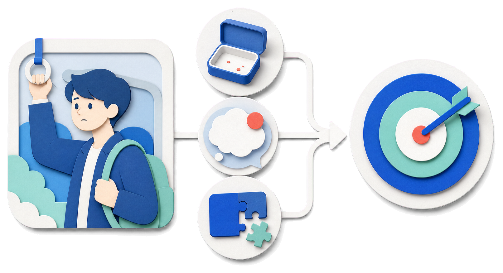
PART 1 · 바로 적용하기
페르소나는 설명이고, 가설은 실제로 확인해야 할 질문입니다.
나이·직업·상황으로 “누구”를 먼저 정합니다.
예: 퇴근길 직장인→막연한 불편이 아니라 자주 일어나는 장면을 고릅니다.
예: 오늘 할 일을 기억 못 함→정말 불편한지, 어떤 결과가 도움이 되는지 확인합니다.
“이때 무엇이 가장 번거로운가?”PART 2 · MVP와 사용 흐름
부품을 쌓는 것이 아니라, 사용자가 핵심 가치를 경험하는 한 번의 흐름을 만듭니다.
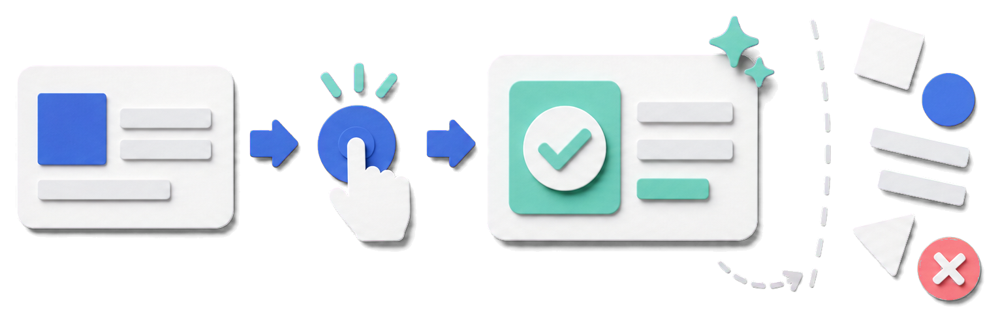
PART 2 · 바로 적용하기
“이번에 할 것”과 “끝난 것”을 정하면 기능이 늘어나는 것을 막을 수 있습니다.
핵심 가치를 보여 주는 기능 하나만 남깁니다.
예: 할 일을 입력해 목록에 추가→꾸미기·검색·알림은 나중 아이디어로 따로 둡니다.
기능을 버리는 것이 아니라 미룹니다.→무엇을 누르면 무엇이 보이는지를 문장으로 적습니다.
버튼을 누르면 목록에 그 줄이 보인다.PART 3 · 기획 문서와 첫 작동
무엇을 만들지, 어떻게 보일지, 어떻게 일할지를 파일로 나눠 두고 AI에게 읽힙니다.

PART 3 · 바로 적용하기
코드만 바꾸면 다음 AI 작업이 낡은 기준을 다시 읽습니다. 문서부터 바꾸고 다시 확인합니다.
대상·기능·제외 중 하나가 바뀌었다면 멈춥니다.
“알림은 이번에 빼자”→바뀐 결정을 문서의 해당 항목에 반영합니다.
제외 항목에 알림을 적기→AI가 바뀐 문서를 읽은 뒤, 화면에서 반영을 확인합니다.
“prd.md를 다시 읽고 적용해”PART 4 · 화면과 한 단계씩 만들기
“예쁘다”가 아니라 색·간격·순서처럼 다시 만들 수 있는 특성을 design.md에 남깁니다.
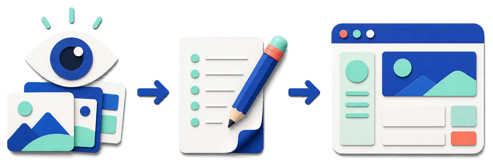
PART 4 · 바로 적용하기
한 번에 전부 완성하려 하지 말고, 화면 하나 · 동작 하나 · 확인 하나씩 이어 갑니다.
PART 5 · AI 작업 시스템
AI가 일하는 중간을 통제하려 하기보다, 넣어 주는 것과 확인하는 것을 분명히 합니다.
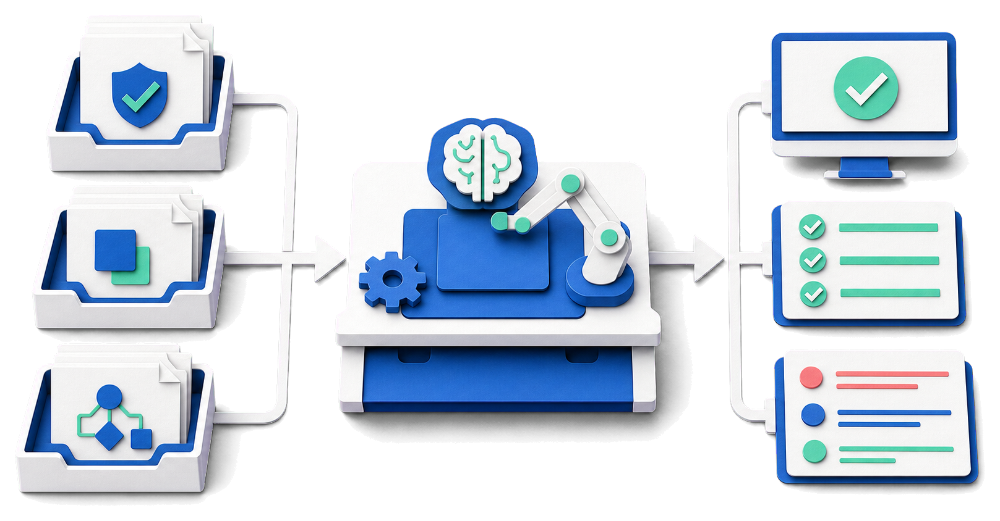
PART 5 · 바로 적용하기
증거를 강하게 만들고, 반복되는 판단은 알맞은 장소에 저장합니다.
현재 슬라이드
슬라이드 제목